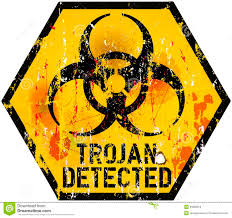

TROJAN: tipo di malware che nasconde al suo interno un programma apparentemente inutile; è l'utente stesso che installando ed eseguendo questo programma, infetta il proprio pc con il codice trojan nascosto. A differenza dei malware visti in precedenza, i trojan non sono in grado di agire autonomamente, ma l'utente stesso deve scaricarli sul proprio pc; sono quindi nascosti dai cracker in giochi piratati, musica, film. Un trojan può contenere qualsiasi istruzione dannosa e spesso è traghettatore di keylogger o malware molto dannosi.
